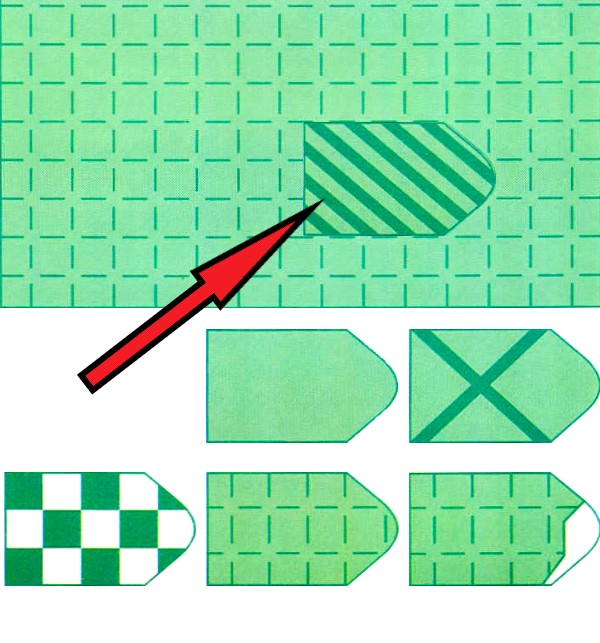
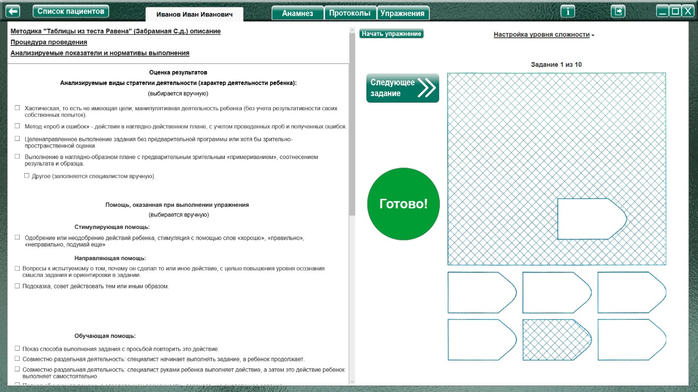
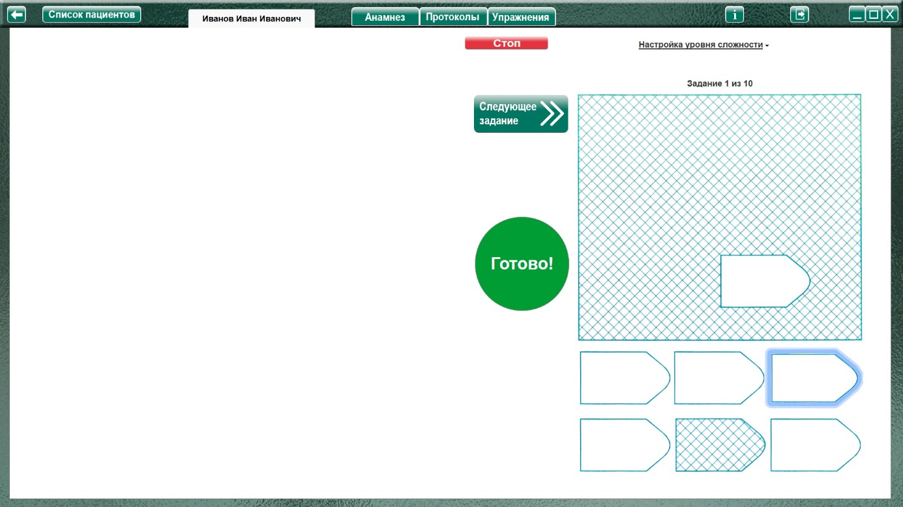
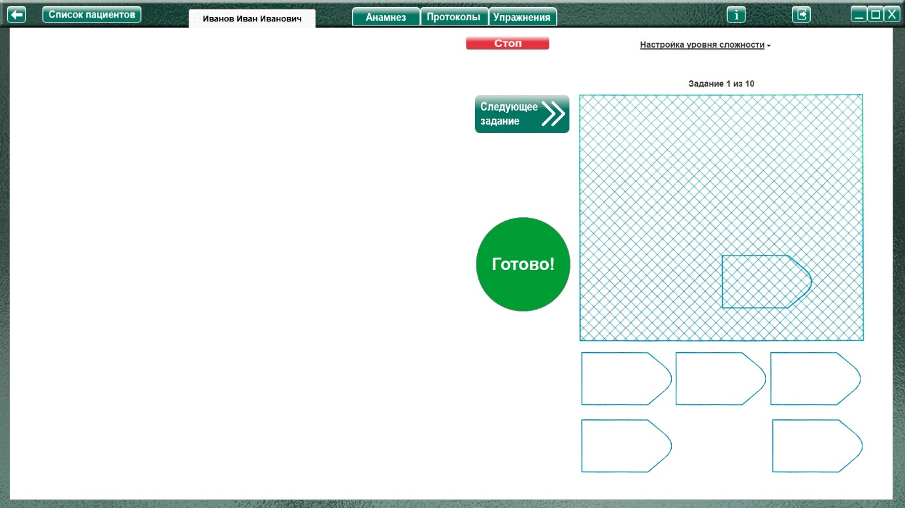
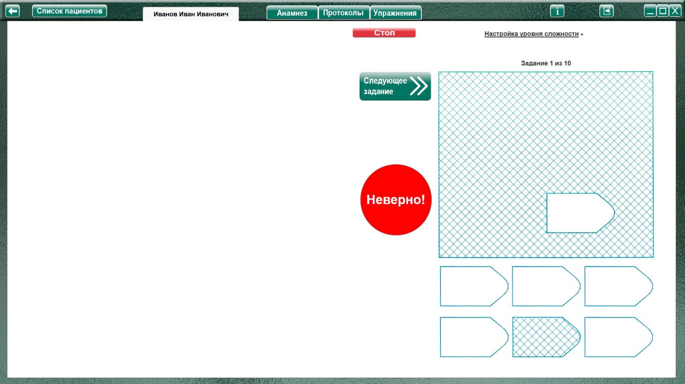

Методика "Таблицы из теста Равена" (Забрамная С.Д., Боровик О.В.)
Методика " Таблицы из теста Равена " (Забрамная С.Д., Боровик О.В.) описание
Процедура проведения.
Ребенку поочередно показывают таблицы (из теста Равена) с изображениями, содержащими пробелы. Ребенок должен найти среди внешне похожих вставок ту, которой стоит заполнить пробел. Трудность заданий постепенно нарастает, а принцип выполнения остается тот же.
Чтобы придать работе игровой характер и с целью оказания помощи, можно вырезать пробел и вставки. Это позволит проследить за характером выполнения задания (ищет соответствующую вставку или пробует втолкнуть в пробел все вставки наугад).
Особенности процедуры проведения на ПК.
Нужно объяснить ребенку что, когда он решит, что правильно подобрал фрагменты, нужно нажать на большую круглую зеленую кнопку «Готово».
Если фрагменты выбраны правильно, будет предложена следующая таблица.
Если фрагменты подобраны неправильно, то кнопка станет красной с надписью: «Неверно!» Это значит, что нужно продолжить упражнение. После любого действия ребенка с фрагментами кнопка вновь станет зеленой.
Специалист так же может остановить выполнение, нажав кнопку «Стоп» (появится вместо кнопки «Начать упражнение»).
Анализируемые показатели и нормативы выполнения
Дети с нормальным умственным развитием уже в 5—6-летнем возрасте понимают инструкцию и выполняют задание. Как правило, они действуют осознанно, находя подходящую вставку на основе зрительного сопоставления, при этом проявляют живой интерес к работе и испытывают радость при ее удачном выполнении.
Дети с задержкой психического развития к 7 годам при оказании организующей помощи выполняют таблицы 1—5. При выполнении таблиц 6—10 нужна значительная помощь.
Умственно отсталые дети 8—9-летнего возраста нуждаются в разъяснении инструкции. Они пытаются заполнить пробел наугад взятыми вставками, при указании помощи справляются с наиболее легкими заданиями (табл. 1- 5). Однако более сложные задания (табл. 6—10) оказываются для них непосильными и при таком условии. Дети не усваивают принципа выполнения задания. У умственно отсталых детей нет стойкого интереса к данной работе. При нарастании сложности таблиц интерес угасает.
Оценка результатов
Характер деятельности ребенка:
Виды возможной помощи:
Стимулирующая помощь
Направляющая помощь:
Обучающая помощь:
Протокол фиксации результатов исследования
_________________________________ _______________
ФИО Дата рождения
Методика |
Таблицы из теста Равена |
Автор методики (адаптации, модификации) |
Забрамная С.Д., Боровик О.В. |
Цель: |
Выявить уровень зрительного восприятия, наглядно - образного мышления; внимания. |
Дата / специалист |
|
Результат: вывод об уровне развития |
|
Примечание |
|
Процесс выполнения диагностической методики |
|
Факт выполнения / Время |
Характер деятельности ребенка |
Виды помощи |
Логика заполнения протокола
Заполняется автоматически
Имя специалиста – логин при входе в программу.
Дата – дата и время прохождения упражнения в формате дд.мм.гггг. чч:мм
Факт выполнения (выполнено, не выполнено.) /
/ Время - время, затраченное на прохождения задания.
Ячейки «Характер деятельности ребенка», «Виды помощи» заполняются в зависимости от выбора специалиста в поле «Оценка результатов» либо самостоятельно.
Остальные ячейки заполняются (правятся) специалистом самостоятельно.
Элементы управления настройкой и выполнением упражнения
Меню настройка уровня сложности
При нажатии открывает окно, для выбора настроек необходимого уровня сложности

Пример:

|
 |
| Выбран | Не выбран |
По умолчанию выключен!

При установке чекбокса в данном пункте, при начале (или во время) упражнения выбранный фрагмент перемещается на «свое место» в основной картинке.
облегчая сравнение узора фрагмента с узором основной картинки.
Выполнение упражнения.

До начала упражнения в рабочем поле отображается картинка, по которой будет выполнятся упражнение, а также кнопка «Готово», чтоб показать ее ребенку до начала выполнения упражнения.
Нажатие на кнопку «Начать упражнение» – открывает упражнение на весь экран. Выполнить задание согласно пункту «Процедура проведения» Если в меню выбора сложности выбрано «Выделение (подсвечивание), то ребенок выделяет (левой кнопкой мыши) нужные фрагменты.

Если выбрано «Перемещение», то фрагменты соответственно перемещаются на свое место на основной картинке

Если ребенок считает, что выбрал нужные фрагменты, то нажимает кнопку «Готово».
Когда фрагменты выбран не верно, кнопка «Готово» сменяется на кнопку «Неверно»,

и остается такой до продолжения выполнения задания (любого нового действия с фрагментами), после чего вновь сменяется на кнопку «Готово»
Специалист так же может остановить выполнение, нажав кнопку «Стоп» (упражнение будет считаться невыполненным) или переключить на следующее задание кнопкой «Следующее задание»
Если фрагменты выбраны верно, то автоматически включается следующее задание (всего 10).
По выполнении всех упражнений (или остановки выполнения специалистом) снова открывается область для оценки результата, и формируется «Протокол фиксации результатов» При необходимости выбрать характер деятельности, виды помощи, и нажать кнопку «Сформировать протокол». Произвести оценку результата (заполнить оставшиеся ячейки протокола) согласно пункту «Анализируемые показатели и нормативы выполнения».